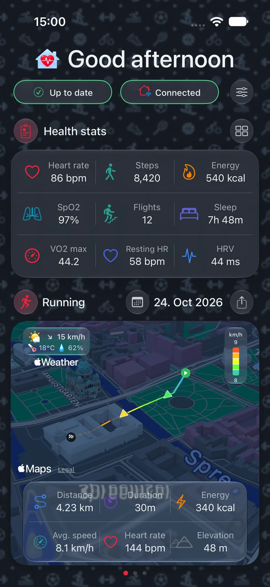
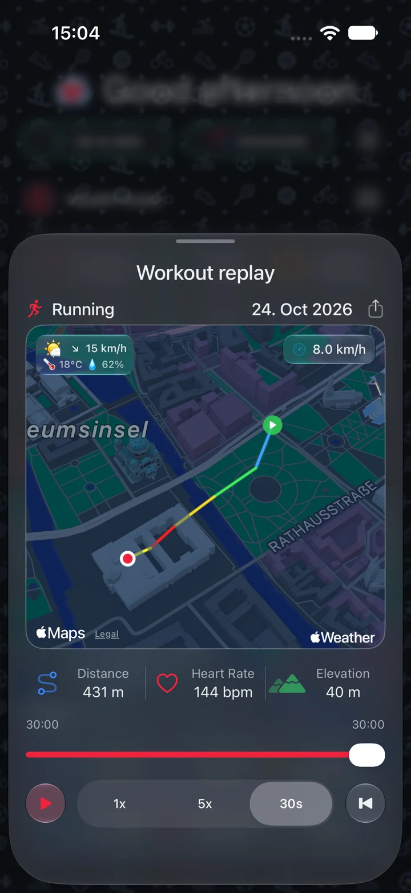
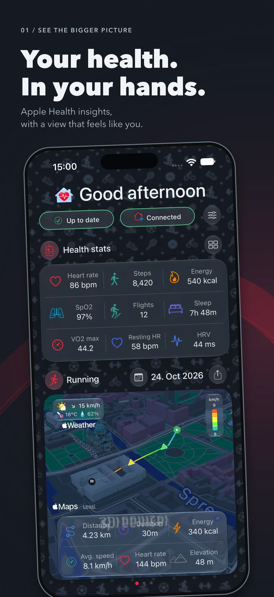
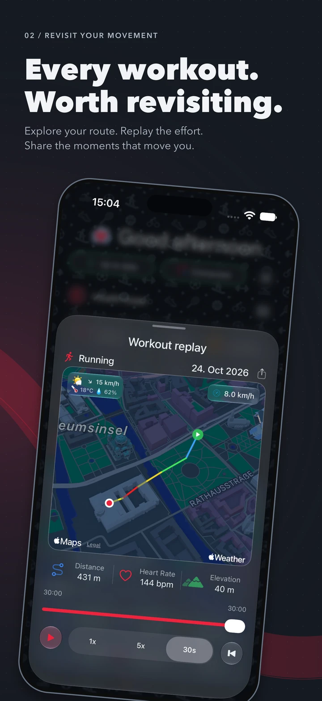
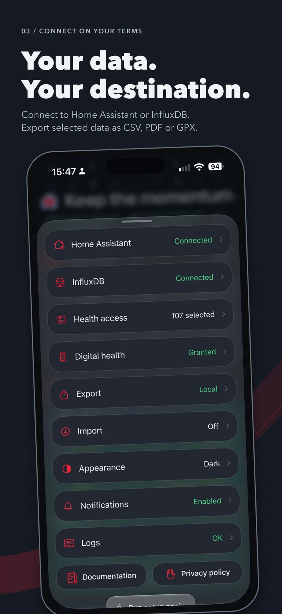
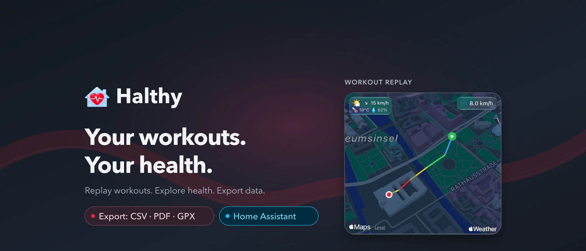

Explore the numbers
Selected health data, ready for your own analysis.
YOUR EVERYDAY, BETTER UNDERSTOOD
A clearer picture of you. Explore the health data you already record, relive every route and take your data wherever you want it to go.
iOS 18.5 or later. Seven-day trial. One-time Lifetime Access.
No subscription. No Halthy account required.


A little more insight. A lot more you.01 / SEE THE BIGGER PICTURE
Your health story doesn't stop at a number. Find the patterns, revisit the effort and choose what comes next.

Choose your metrics. Explore charts, trends and recorded sleep stages.

Browse your workout calendar, replay a route and share the moment.

Keep it local, export a file or connect the services you control.
App Store artwork with synthetic health values and a demonstration route. Available readings and routes depend on your records and permissions.
02 / TAKE IT WITH YOU
From a spreadsheet to a trail map. Export just what you need, then choose where to share it using the iPhone share menu.
Explore export optionsSelected health data, ready for your own analysis.
Readable reports with optional graphs.
Recorded workout routes, ready for compatible tools.
DIRECT TO YOUR DESTINATION
No Halthy cloud relay.
Your services. Your control.
03 / CONNECT, IF YOU WANT TO
Bring selected Apple Health metrics and workouts into Home Assistant, or keep supported sample history in your own InfluxDB instance.
Both connections are optional. Your dashboard, workout views and local file exports work without either server.
Background uploads follow iOS scheduling and data availability. An exact upload interval is not guaranteed.
LESS SHARING. MORE CHOICE.
No advertising, tracking or Halthy-operated health-data server. You choose your permissions, your metrics and your destinations.
04 / MAKE IT YOURS
A few minutes to find your way around. A guide for everything you want to do next.
